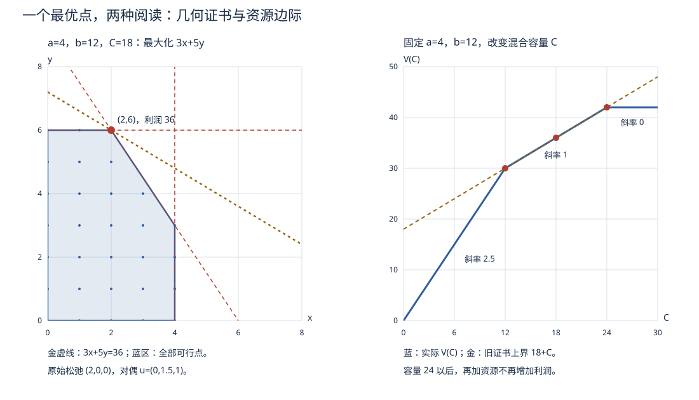

本页目录
优化 IV · 线性规划与动态规划
两大经典算法范式收官运筹线。线性规划是约束优化理论的完全体标本——几何清晰、对偶完美、算法成熟；动态规划则是另一种完全不同的求解哲学：把时间/阶段结构变成递推。两者也各自通向 AI 的一条大动脉（LP 对偶 → 组合优化；DP → 强化学习的 Bellman 方程）。
学习层：一个可行点，为什么还不能交卷？
1. 具体实例：产品配额的两个账本
工厂生产两种产品，数量分别为 \(x,y\)，单位利润为 \(3,5\)。原料与工时给出
先不要画图。给出一个满足全部不等式的点并不难，难的是回答：它是不是利润最大的点？如果把产品改成整件发货，连续解还能不能直接当作答案？如果把“阶段”换成背包容量，为什么要写状态 \(V(i,w)\)，而不是继续找一个连续顶点？
2. 先预测：哪两条边会同时绷紧？
在打开实验前，预测默认实例的最优点和活动约束：是资源 1 与混合资源、资源 2 与混合资源、两条单资源边，还是坐标轴边界？同时写下你认为对偶目标值会不会与原目标值相等。滑块改变容量后再预测一次；只看“可行”不能替代最优性判断。
3. 最小模型：连续 LP 的双重证书
对一般形式
对偶是
一个完整的最优证书要同时检查：原始可行 \(Ax\le b\)；对偶可行 \(A^\top u\ge c\)；原始目标与对偶目标的间隙为零；以及互补松弛
默认实例的连续答案是 \((x,y)=(2,6)\)，利润 \(36\)；对偶证书可取 \(u=(0,\frac32,1)\)，其目标 \(12\cdot\frac32+18=36\)。这四行账本比“图上看起来最远”更正式。
4. 正式桥：顶点、整数与状态不是同一个对象
若 LP 有最优解，线性目标在多面体上有一个顶点最优解；强对偶把两个可行账本的相等变成最优性证书。把 \(x,y\) 改成整数后，可行集变成格点，连续对偶值仍是整数问题的上界，却不必由整数点达到；四舍五入也可能破坏约束。动态规划则把阶段和资源写成离散状态，例如
它依靠最优子结构和重叠子问题，不是把整数状态误当作连续 LP 的顶点。
5. 误区与边界：证书能证明什么，不能证明什么？
- 数值可行不等于最优。 一个点满足全部约束，只能通过原始可行性；没有对偶可行性和零间隙，不能交付“最优”。
- 互补不等于任意活动集。 约束绷紧时乘子可以为零；变量为零时对应的对偶约束可以有正松弛。
- 连续证书不自动解决整数问题。 LP 松弛的对偶值是界，分支定界还要处理整数性；DP 的表格状态也要保留离散转移。
- 退化与数值误差。 多个顶点或约束同时活动时证书可能不唯一；计算中应报告容差，而不是把很小的残差当成精确等式。
6. 可迁移问题：换一个资源，先保留哪条检查？
若目标系数或容量改变，先重算候选顶点，再用原始/对偶账本核验；若加入整数约束，另解整数候选或 DP 递推。问自己：当前图形是在证明连续模型，还是只是在展示一个 toy 的几何直觉？这条区分会一路跟到组合优化和强化学习。
无 JavaScript 时的静态 fallback：默认连续 LP 的最优点为 \((2,6)\)，原始目标为 \(36\)；对偶变量为 \((0,\frac32,1)\)，对偶目标也为 \(36\)，原始/对偶松弛和互补松弛均为零。页面开启脚本后，可改变三个容量，先选择活动边再揭示 SVG、连续与整数解、对偶值和证书账本。整数约束与 DP 状态仍需单独判断；可行点本身不代表最优。
1. 线性规划：问题与几何

标准形：
（任何 LP 可化标准形：不等式加松弛变量、自由变量拆正负部。）
几何：可行域是多面体（半空间之交，凸）；目标是线性的——等值面是平行超平面族，"推到底"必停在边界。
定理（顶点最优性） LP 若有最优解，则必有一个顶点（基本可行解）是最优解。 思路：线性函数在凸多面体上的最值在极点取到（否则沿某方向还能改进或目标无界）。——搜索空间从连续体塌缩为有限个顶点，算法由此可能。
2. 单纯形法（思想版）
代数对应：顶点 \(\leftrightarrow\) 基本可行解（选 \(m\) 列构成可逆基 \(B\)，\(x_B = B^{-1}b \geq 0\)，其余变量取零）。
算法一句话：从一个顶点沿棱走向更优的相邻顶点，走到无处可优为止。每步操作：
- 算检验数（各非基变量入基能否降目标）——全非负则当前顶点最优，停机；
- 选一个负检验数变量入基（下降方向）；
- 最小比值法则定谁出基（走到棱的尽头即撞上新约束）；
- 换基（Gauss 消元一步），回到 1。
补充认知：最坏情形指数步（Klee–Minty 立方体），但实践中极快；内点法（多项式复杂度、走可行域内部）是它的现代对手，大规模 LP 两者并用。退化、循环与 Bland 规则知道名字即可。
3. LP 对偶（对偶理论的完美标本）
对标准形 \(\min c^\top x,\ Ax = b,\ x \geq 0\)，其对偶为
（写法口诀：变量与约束互换身份、\(b\) 与 \(c\) 互换位置、min ≤ 对 max ≥。对偶的对偶 = 原问题。）
LP 强对偶：两侧只要有一侧有最优解，另一侧同有且最优值相等（不需要 Slater——线性的特权）。互补松弛：\(x_j^* > 0 \Rightarrow\) 对偶第 \(j\) 约束绷紧；\(y_i^* \neq 0 \Rightarrow\) 原第 \(i\) 约束绷紧——已知一侧最优解可解出另一侧（考试与应用的标准操作）。
影子价格实感：\(y_i^*\) = 资源 \(b_i\) 增加一单位时最优利润的增量——"这吨原料值多少钱"由优化问题内生地定出。🔗 最大流-最小割定理是 LP 对偶的组合化身；SVM 对偶（优化 III）在 LP 这里有最干净的原型。
4. 整数规划一瞥
变量限整数（选址、排班、背包）。难点：可行域不再凸，许多整数规划是 NP 难的，连续 LP 结论不能直接搬过来。两个思想级武器：LP 松弛（去掉整数约束解 LP；最大化问题得到上界，最小化问题得到下界，同时常给出分数解）；分支定界（对分数变量分两支 \(x_j \leq \lfloor v \rfloor\) / \(\geq \lceil v \rceil\) 递归，用 LP 界剪枝——"用松弛问题的界导航穷举"）。
5. 动态规划
适用结构：问题可分阶段，且满足——
最优子结构（Bellman 最优性原理）：最优策略的任何后段，对其起点而言仍是最优策略。于是价值函数满足递推：
（当前代价 + 后续最优——"倒着算"或"记忆化"。）
重叠子问题：朴素递归会重复计算 ⇒ 记表复用，指数变多项式。
经典例题谱：最短路（Dijkstra/Bellman–Ford 皆可视为 DP）、背包（\(V(i, w)\) 二维表）、最长公共子序列、编辑距离、矩阵链乘。
🔗 AI 衔接：把递推里的确定转移换成概率转移、代价换成奖励，就是马尔可夫决策过程的 Bellman 方程——强化学习（Q-learning、价值迭代）的全部理论骨架就是随机化的 DP（随机过程页 Markov 链是它的另一半地基）；ai 课 04 讲说反向传播 = "链式法则 + 动态规划"，指的正是"记表复用"这个思想。
6. 典型例题
例 1（LP 建模 + 图解） 产品 A/B 利润 3/5，工时约束 \(x_A \leq 4\)，\(2x_B \leq 12\)，\(3x_A + 2x_B \leq 18\)。求利润最大。 解：二维直接画可行域（五边形），顶点逐个算目标：\((2, 6)\) 处 \(z = 36\) 最大。（教材第一题的价值在于亲眼看到"最优在顶点"。）
例 2（互补松弛解对偶） 例 1 的对偶变量：最优解处绷紧的约束是第 2、3 条 ⇒ \(y_1 = 0\)；对 \(x_A, x_B > 0\) 的两条对偶约束取等：\(3y_1 + 3y_3 = 3\) 变为 \(3y_3 = 3\)…解得 \(y_2 = \frac32,\ y_3 = 1\)。验证 \(b^\top y = 12\cdot\frac32 + 18\cdot 1 = 36 = p^*\) ✓。第三车间的工时影子价格 1 元/时——加班费低于它就值得加。
例 3（DP 背包） 容量 5，物品 (重,值) = (2,3),(3,4),(4,5)。递推 \(V(i, w) = \max\big(V(i{-}1, w),\ V(i{-}1, w - w_i) + v_i\big)\) 填表得 \(V = 7\)（取前两件）。手填一张 DP 表的经验不可替代。\(\blacksquare\)
运筹线四页完工。它的孪生兄弟在应用计算线等着：数值分析（同样的问题, 问"计算机怎么算得又快又稳"）。下面转入统计线。